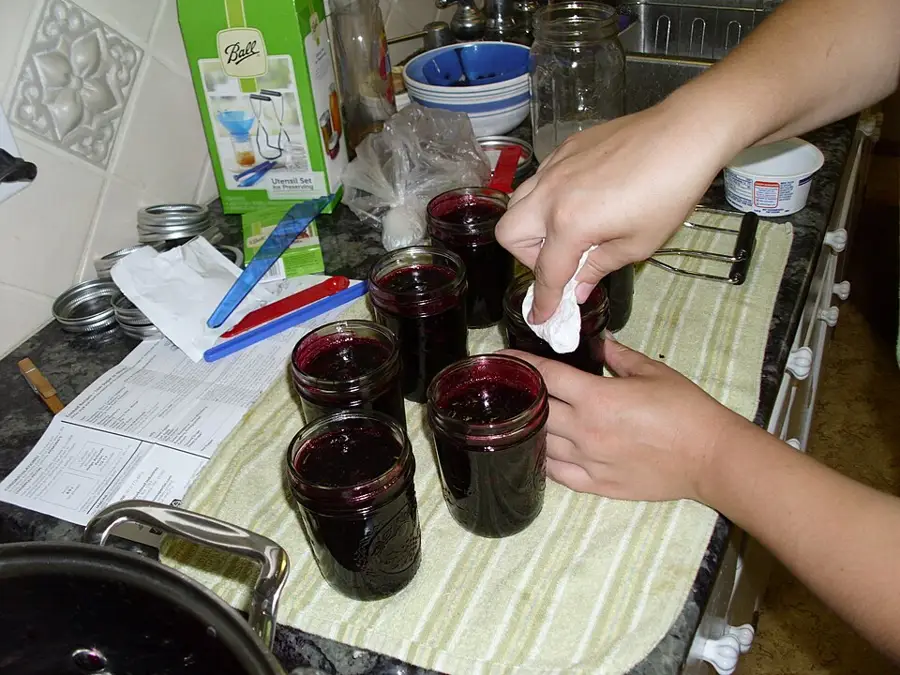

Summer Glut Preserving Day
A glut becomes jars: teens wash, chop, pack and label under one tested recipe followed exactly, while the adult runs the processing, summer, kept.
Ages 13–1450–60 min4 materials
- Ages
- 13–14
- Group
- 4–14 kids
- Time
- 50–60 min
- Where
- Indoors
- Prep
- Some prep needed

Setup
Choose the recipe before you choose the day, and choose it the way this record insists: from a recognised preserving authority's tested instructions, matched to the produce the glut actually offers, with its processing method the adult running the session is equipped and willing to run. Read it entire, twice, once for the work and once for the traps: the jar size it assumes, the acid it requires, the headspace it specifies, the processing time at the day's method, because on the day itself the card will be followed, not interpreted, and anything unclear gets settled now, with the authority's text, not at a boiling pan. Count jars against produce honestly (a glut always looks bigger before it is washed), wash and inspect every jar for chips and cracks, a flawed jar is retired to the recycling without a speech, because it will fail at the worst moment or not at all, and neither is acceptable, and lay the room out as the recipe's line: washing, chopping, packing, processing, cooling, labelling, in that order, with the knife station between washing and packing and the adult's processing station at the line's end. Check allergies for every hand and every future taster before a single jar is filled, and write them at the day book's head.
Materials
- the glut itself (a surplus the site or its gardeners actually have, soft fruit, tomatoes, cucumbers, whatever the season is giving away faster than it can be eaten; sound produce only, chosen by the crew, with anything mouldy or spoiled composted before it reaches the table)
- jars and new lids, washed and kept hot as the recipe directs (one size, matching the recipe. Preserving is not the day to improvise with odd jars, because the processing time belongs to the jar as much as to the food)
- ONE tested recipe from a recognised preserving authority, printed or copied onto the day's single recipe card (the day's whole law: its quantities, its acid, its processing time, chosen by the adult in advance for the produce in hand)
- labels, a marker that survives the larder, and the day book (contents, recipe source, date, batch count, and the crew's names, every jar traceable to its day and its page)
Steps
- The framing, at the washed and laden table: 'A jar sealed properly is summer kept. Today the glut becomes the larder, and the whole day runs on one law: the recipe is not a suggestion. Its quantities are not flavour preferences we may tune, the acid, the sugar, the time in the processor are the difference between a jar that keeps and a jar that merely looks kept, and nobody at this table can taste that difference, which is exactly why we do not improvise it. We follow the card exactly, we write down what we did, and the jars we cannot vouch for get labelled for the fridge and eaten first, proudly, at the top of the day book, not hidden at the back of a shelf. Teens prep, pack and label. The processing, the boiling, the timing, the seal check, is the adult's station and the adult's alone. Inside those lines, this is your preserving day, and what keeps from it will still be summer in the middle of winter.' The recipe card is read aloud entire by the day's reader before the first knife is lifted, so every hand knows the law it is working under.
- Prep line, run at kitchen discipline: produce is washed, sorted a second time at the table (the sort is kinder before washing than after), and chopped or packed to the card's specification, sizes matter here, because the processing time was tested on pieces of the size the recipe names, and a crew that doubles the chunks has quietly rewritten the card. Knives are counted out, used at the chopping station only, washed by their user, and counted back; the line's pace is set by its slowest careful hand and nobody hurries a blade to catch up a pan. Jars are packed as the card directs, the headspace measured with the gauge or marked stick the recipe assumes, rims wiped clean before lids, because a rim with a seed on it is a seal that will fail politely in the dark months later. Every batch is announced to the day book as it is packed: time, jar count, any deviation, and the book's rule is that a deviation is written at the moment it happens, in the open, where the adult at the processing station can rule on it before the jars go in, not after.
- Processing, the adult's station, watched and learned from at a respectful distance: the crew observes the full ceremony, jars in as the method directs, the timer set aloud and its start spoken, the processing time kept entire without the lid lifted for curiosity, because the card's minutes are a wall, not a window. While the processor runs, the day's teaching happens at the cooling end of the line: why the acid is in the recipe and what it guards, why the times lengthen with jar size, why a tested recipe from an authority outranks a confident video. The crew is being taught the shape of the knowledge, not encouraged to freelance with it, and the distinction is stated plainly while the jars tick and settle. Jars come out to the cooling racks untouched, undisturbed for the hours the card specifies, with the cooling zone marked and defended: a jar knocked while it is sealing is a jar for the fridge list, and the crew learns to walk around a cooling rack the way sailors walk around a sleeping watch.
- Seal check and labelling, the next session or the day's late hour as the card allows: the adult checks every seal by the authority's test and the verdicts are entered batch by batch, sealed, or fridge-first, with the fridge-first jars labelled as such in the same proud hand as the rest, because the day book's honesty is the batch's real shelf life. Labels are written at the table by the crew: contents in plain words, the date, the recipe's source, the batch number from the day book, and any allergen the recipe carries, lettered to be read in a dim larder by somebody who was not here. A jar without a complete label does not leave the room. An anonymous jar is a question nobody should have to open to answer. The first jar of the day is opened and tasted at the table there and then (allergies already checked, the adult tasting first), because a preserving crew that never tastes its own work has kept summer and learned nothing about it.
- Closing the day, the larder shelf and the book: sealed jars are carried to their shelf in one trip each, two hands per jar, and the shelf is photographed or listed in the day book, the batch's official existence, with the fridge-first jars at the list's head and a date by which they will be eaten, assigned to a real meal the group will actually have. The closing tell-back is said over the day book: 'This morning this was a glut. More summer than anybody could eat. Tonight it is jars with names, dates and a book that can vouch for every one of them, because we followed one tested recipe exactly and wrote down the day we did it. What keeps from today will be opened in the cold months by people who will read the label and know whose summer it was. That is preserving: not defeating the season, but keeping faith with it.' The recipe card is filed inside the day book's cover. Next glut's crew starts from this day's page, its deviations, its verdicts and its tasting notes, not from an empty table and a confident memory.
Variations
Easier: A fridge-only version (no processing equipment or no adult free to run it): the crew makes a refrigerator preserve the card vouches for, a quick pickle or fridge jam by a tested recipe, labelled fridge-first by design, dated short, and eaten within its stated days at a real shared meal.
Harder: A labelling-and-audit version (a larder already stocked from earlier days): the teen crew audits the shelves against the day books. Every jar's label checked against its batch page, anonymous or doubtful jars moved to the front for the adults to rule on, and the larder list rewritten true.
⚠️ Safety
The recipe's authority is this record's first safety system and it is structural, not advisory: one tested recipe from a recognised preserving authority, followed exactly, quantities, acid, jar size, headspace, processing time, because preserving safety lives in ratios and minutes that cannot be tasted, smelled or guessed, and no crew member, however confident, alters any of them; a change anyone wants is a different tested recipe, chosen by the adult before the day, never an edit made at the pan. All heat processing, the processor, the boiling water, the lifting of hot jars, is the adult's work alone, at a station the crew observes from the marked line; jars are carried cool, two-handed, one at a time. Knives are counted out and back, live only at the chopping station, and washed by their own user. Allergies are checked before the day and again before the tasting, and recorded at the day book's head; produce is sound or it is compost, the sort throws away anything mouldy or spoiled entire, never trimmed-and-kept, because the glut is plentiful and the jars are few. Any jar whose seal fails, whose batch deviated unrecorded, or whose history the book cannot vouch for is fridge-first and eaten within days, and that ruling has no appeal at the table.
🤝 Inclusion notes
The preserving line is a row of real jobs at every reach: washing and sorting can be done seated at the table's low end; the day book, the batch's memory and the day's conscience, is kept by a seated keeper whose entries the adult reads before any jar is processed; labelling is fine, unhurried work done sitting, with labels written large, dictated to a partner scribe, or lettered from the batch's stamp set where the site keeps one. The recipe is read aloud entire at the framing and the card stands at the line's centre in the largest clear print the room can make, so no hand's work depends on another's eyes or memory. Tasting is offered, never owed. A crew member who does not taste loses no standing, and the tasting notes take 'not tasted' as a complete entry. The cooling racks and the larder run are arranged on the route the crew walks together for step-free passage before the first jar is filled, so the day's proudest trip, summer, carried to its shelf, is a trip every member of the crew can make.
⭐ Tried this? Rate it
Your ratings live in this browser only. Nobody else can see them. There are no community ratings here; every star on this card is yours.
Rate this activity, add a note, or write a reflection
✏️ Quick reflection
Optional, saved with your rating, and exported with "📋 Copy my week".
Full activity card,